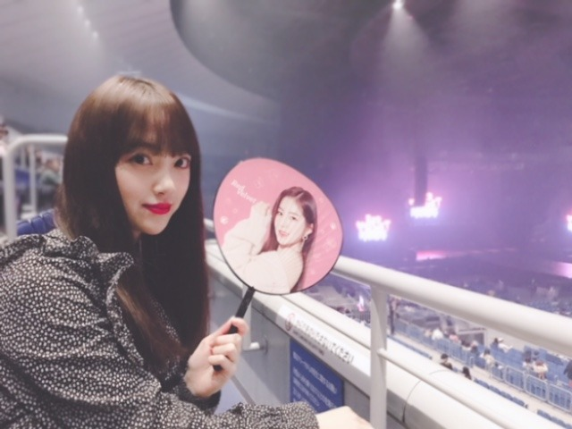

2019/0130Wed木苺になった
台北アリーナでのライブ！
楽しかったです☺︎
皆さん温かく迎えてくださり
ありがとうございました✨
謝謝✨

まだ行けてない国や県でも
ライブができたらいいな...
ステージ上から見える皆さんの笑顔が大好きだし
やっぱり歌って踊ることが好きなんだなぁって
ライブを重ねる度に思います
今この瞬間を大切にしなきゃ。
だか、ライブ1回1回を自分の最大限で表現していきたいですし
あとは、めいっぱい楽しむ！いつも楽しんでるけど！
バースデーライブも楽しみだなぁ
さてさて、、
わたしの趣味は、
美味しいお店巡り、
映画鑑賞、
温泉巡り、
美術館巡り で、巡りづくし。笑なのですが
やっぱり映画を観るのがとても好きで
観た映画の感想を
たまにブログに綴ってみようかなと思います！
そして
「第11回日本ブルーレイアンバサダー」にも
有難いことに選んでいただいたので
ブルーレイの良さ、映画の良さを少しでもたくさんの人に伝えていけるように頑張ります✨
美しい映像で観る映画は鳥肌が立ちます...
私の感想がきっかけで映画を見たよーなんて
言っていただけたら嬉しいな☺︎
早速、先日観た映画を！
755に少し感想を書いたのでそれを
引用しながら書き加えました
[ ワンダー君は太陽 ］
生まれつき障害を持った
男の子が学校に通いはじめ、
いろんなことが起こるヒューマン物語です
主役の男の子をはじめ
周りのクラスメイトや家族、
家族の恋人や友人 1人1人にもちゃんと
視点を置いて描かれているので
さまざまな方向からストーリーを見ることができて
色んな発見がありました
物事や現実を自分の"いつもどおりの角度"でみると、
それは変わらない"いつもどおりの景色"で、
でも時には違った方向から見つめてみる事が
私達には必要な事だなと思いました
例え結果や結末が予測しにくくて
怖いことがあるかもしれないけど
その一歩を踏み出す勇気が
自分や周りの人に
何か変化や希望を与えるかもしれない
人はみんなそれぞれ違う顔
違う声、違う性格で、
環境も違えば趣味も違い
もちろん考え方も人の数だけ違います
自分が人と違うのは当たり前で、
周りの人が自分と違うのも当たり前
だからこそ目の前の人と見つめあって
もっと相手のことを知って
理解して手を出して助け合っていくことができたらな...って思います
苦しいことや辛いことがあるのが人生で、
そこに立ち向かう人間は強くてかっこよくて
美しいものだなと再認識させられる
とても心が温まる映画でした
なんかね、
話の進み方や少しクスッと笑えるポイントが間にあったりする感じが私の好きなジャクリーンウィルソンさんが書く物語に似ていてとても惹きつけられました。
余談ですが
ワイルドスピードと
MEGザモンスターを観て思ったこと。
ジェイソンステイサムさんが素敵！
筋肉はもちろん
あの男らしい勇敢な性格に
優しさ溢れる笑顔
シュワルツェネッガーさん以来の衝撃...
特にMEGザモンスターで
女性がサメに食べられそうになった瞬間
躊躇なく海に飛び込んで助けにいく姿が
本当に男らしくて、、
女性は相変わらず
ミラジョボビッチさんと
アンハサウェイさんに憧れます
シンデレラやオーロラ姫のような
品もありながら強さもある素敵な女性
アクションもラブストーリーも似合うし
笑顔も真剣な表情も似合う...
映画ってどんどん引き込まれます✨
次はどんな映画を観ようかな？
あ、そうそう話が変わりますが
昨日はRed Velvet さんの
ライブを友達と観に行ったんだ〜
どっちが好きなの〜♪♪



人生で初めてうちわを持ってのライブ参加。
使い方がわからなくて、始まってから
そっとかばんに閉まってライブを観ました笑
パフォーマンスもMCも衣装も
ぜーんぶ可愛かった！
色んなアーティストさんのライブを観ると
私も頑張らなきゃって改めて思うし
皆さんに会いたくなる...
あ、今日23:45〜
レコメン！聴いてください
ではは。
コメント(381)
ワイルドスピードは親とよく見てたなぁ
未央奈さんのブログで映画の事を書いた時とても見たくなったよー
時間がある時にいろいろ見てみるねー
アイリーンよりも堀ちゃんが可愛い！！
かます！！！！！
メグ観たよ俺も！迫力やばかったねあれ
台北お疲れ！
うちわしまってるところかわいいな笑
海外でコンサートできるなんて
すごいよねー
会場の雰囲気もちがうんだろうな
海外はなかなか行けないけど
バースデーライブは行けるから
楽しみにしてる！
みおなうちわ持って行こうかなー(^^)
Mステライヴお疲れさま。
外は寒かったやろうに。
風邪ひかんときよ！
俺みたいにね(笑)
でもみんなのパフォーマンス最高かよ！やったよ。
シンクロにシティ良いね。
乃木坂の中でも特に好きな曲のひとつです。
みんな全てやないと思うけど、自分の事に照らし合わせて聴くこと多いと。
元気や勇気をもらってるからね。
いつもありがとう。
今回の60周年企画Mステは懐かしい映像や曲があっていつも以上に良かったです。
東京フィルハーモニーの皆さんにも感動でした。
ではではまたね。
体調気をつけてくださいね。
ほなね、堀ちゃん！
本当可愛すぎw
趣味が仕事に繋がったね♪
これからも頑張ってください！
バースデーライブ2日目当たりました
今からとても楽しみです
前回はブログの感想を書きました！
時間→「No.241 2019年1月31日 02:36」
前回の冒頭で書きましたが、久々のコメントになってしまった理由を書かせて頂きます！
一言で言うと、ズバリ「嵐ロス」です！
中学生の頃からずっと応援していたので、休止されるのは正直ショックですが、何度も何度も話し合ってくれた結果なので、嵐5人の意見を尊重したいと思います！
「Mステ3時間SP」六本木ヒルズアリーナから生中継お疲れ様でした！めっちゃ寒かったはずなのによく頑張りました！風邪引かないでね！今回の衣装、テレビ朝日開局当時の流行を取り入れた衣装と知り60年の歴史を感じました！ドットのモノクロ衣装とポニーテールが最高！いつも癒し・元気・刺激をありがとう！
歌唱順も乃木坂と嵐が連チャンだったので凄く嬉しかったです！嵐のパフォーマンスも最高！東京フィルハーモニー交響楽団とのコラボや、最後の肩を組んでいるところを観て、感動したと同時にやっぱり嵐が好きだなと思いました！引き続き乃木坂と嵐、2組とも応援させて頂くのでよろしくお願いします！
ここまで読んで頂きありがとうございました！
毎日お仕事お疲れ様です！体調にはくれぐれも気を付けて頑張ってくださいね！
おやすみおな～！
Mステ見ました。乃木坂twitterでの番組出る前の写真の堀さんがティファニーで朝食をみたいだと思ってたら本当に関係あったんですね。堀さんが着てたネックレス有りのが似合ってたし可愛くて好きです。曲中の”誰だって誰だって”の時に花みたく咲くところが綺麗に見える柄でしたね。手袋は少し寒そうでした。
あとモバメ見ました。忙しい中で体調を整え続けるのって大変なんですね。ゆっくり過ごす時間と、あとミカンも食べて微熱を乗り切ってくださいね。
こんにちは。
ブログ更新、ありがとう。
台北のライブ、大盛況だったようですね。
おめでとうございます。
『ワンダー 君は太陽』
近所の映画館でリバイバル上映されたとき、観てきました。
障害を持った主人公の子の話、その子のお姉さんの話、同じクラスの子の話等、幾つかのエピソードが、最後のスピーチで見事にまとまって、感動的な映画でした。
胸が熱くなるような場面が多く、「心の中をのぞいたら、（障害のあるなしに関係なく）みんなも普通ではない」とか「みんな闘っているのだから、いたわれ」とか、心に響く言葉もあって、素晴らしかったです。
ブルーレイを手元に置いて、気の向いたとき、いつでも観られるようにするのもいいですよね。
未央奈さんの解説は、この映画を観れば、心が豊かになるよと紹介しているようで、素敵です。
とてもいい映画を紹介してくれて、ありがとうございます。
ブルーレイ大賞アンバサダーとしても、何か発表することがあるのでしょうか、楽しみです。
ジャクリーン・ウィルソンさんのことは、知りませんでした。
こんど作品を探して読んでみようと思います。
それから、
Red Velvetさんのライブに行ったのですね。
横浜アリーナかな。
写真をみていると、未央奈さん自身がRed Velvetのメンバーみたい。
未央奈さんは、日本を代表するアイドルなのだから当たり前ですよね。
それでは、このへんで。
もうバスラ向けての準備で忙しくなると思います。
いいライブななりますように。
映画の世界でも、アイドルとしても、未央奈さんが輝けますように。
未央奈可愛いな〜！
好きやで！
MステSP出演お疲れ様でした！！
レコメン！の髪型も凝ってて素敵だったし、
Mステのポニーテールも可愛いかったです♡
髪リボンにゴージャスネックレスと衣装で、
ヘプバーンのイメージにぴったりでしたよ♡
魔女の宅急便のキキちゃんにも見えました♡
髪が長いと色々アレンジできて素敵ですね☆
イエローモンキー吉井さんの免許証を見て、
自分の大学時の学生証を思いだしました～♪
髪型を見て少し恥ずかしくなりましたが、、
今月中に運転免許証の更新に行く予定です～
未央ちゃんの疲れはとっても心配ですよー！
とにかく体を温めて、睡眠をとって、
体をなるべく休めて下さいね☺
ワンダー私も見て感動したよ～
ガールズシリーズが大好きです！
結構重い内容でも、軽いタッチで軽快に描かれているから、すごく読みやすくて、共感しやすい。
エリー、マグダ、ナディーンはきっとどこかに実在している女の子のような気がしてしまいます！
ジャクリーンウィルソン好きなんだ、堀ちゃん！共通点が見つかって嬉しい
また好きな物のはなし、してくださいね
握手会いきます！
なったんです
1/30日誕生日です。そして20歳になりました
誕生日の日に更新してくれたのは嬉しい❗
みおなだけだね
ありがとう❗
ライブお疲れ様です
見に行きたかったのですが、テスト近くて行けませんでした。すみません。
バースデーライブ24日当たったので見に行くね❗
きっと泣くだろうな。
またコメント書かせていただくね
なったんより
別に北区には住んでいないけど〜
わたる⊿
相変わらず肌が白くてお美しい
俺も映画鑑賞が趣味だから映画の感想とか載せてもらえるとうれしい
ワイルドスピードだとドウェイン·ジョンソンも筋肉隆々で格好いいよ
最近は翔んで埼玉見たよ！
埼玉県民だけど笑ったわw
MEGも見たよ〜
迫力が凄かった(・Д・ )


堀ちゃんの握手会に行ってみたいけど怖くて行けない…
絶対すきになっちゃう